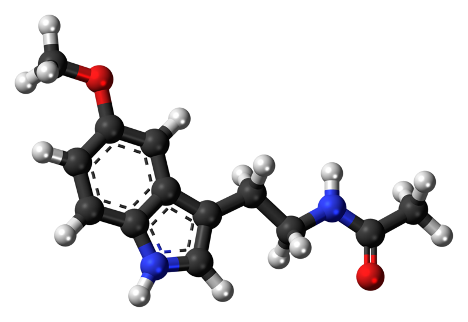

Despite being the most time investing and constant activity of our lives, sleep is yet to be fully understood. Only since the last century has the state peaked interest in biologists and psychologists. Advancements in our knowledge of sleep are fairly recent, with the 2017 Nobel Prize in Physiology or Medicine being awarded to the discovery of the body’s biological clock mechanisms and regulation. We hope to contribute in eliminating this mysterious shroud around the daily activity, specifically in preventing sleep disorders, such as insomnia.
Every night, millions of Canadian citizens flip off their light switch, tuck themselves under the covers and count sheep until sun rays stream from their curtains again. Surveys show that 1 in 10 Canadians experience chronic insomnia and nearly 7 million are prescribed sleeping sedatives a year. With sedatives being the sole treatment and patients being frustrated from their lack of shut-eye, Canada has seen heavy reliance and even addiction to these medications. These benzodiazepines arrive with side effects such as grogginess and elevated anxiety, and are especially easy for tolerance development. It’s growing increasingly common for people to be desperately swallowing four times the amount of medication prescribed, experiencing impairment, heartburns and dizziness.
So instead of depressing the central nervous system, we propose a new treatment. The multifunctional enzyme, caffeic acid O-methyltransferase (COMT), is a key synthesiser in initiating sleep. It forms melatonin, a well-known bioactive molecule that regulates circadian rhythms, our body’s internal clock in scheduling sleep. COMT can be inserted into a plasmid in a laboratory, then can be expressed in E.coli for mass production. The enzyme can then be stored in syringes and prescribed through injection, entering the Pineal gland from the bloodstream and periodically maximizing melatonin expression level. Unlike current benzodiazepines, this treatment results in minimal side effects as it does not affect the brains binding sites and is non-addictive.
By approaching sleep disorder prevention with the building of a new lego protein, millions of Canadians can receive their full night sleep without a depressant. In naturally synthesizing the hormone that signals night, we can avoid the production of toxic compounds and gain compatibility with the human body. Sleeping medication will no longer solely be effective for acute disorders, but also capable for long-term use and repressability.
By publishing our research and protein creation through a website, we provide a platform that is interactive and updatable. Viewers can easily navigate through the specific pages that interest them, information is accessible on any device and links to further sources can be provided. Additionally, the content on a website can be instantly altered and updated, and viewers can be made aware of current events in real-time. Furthermore, this presentation follows the format of the iGEM competition, allowing us to gain experience for any further involvement.